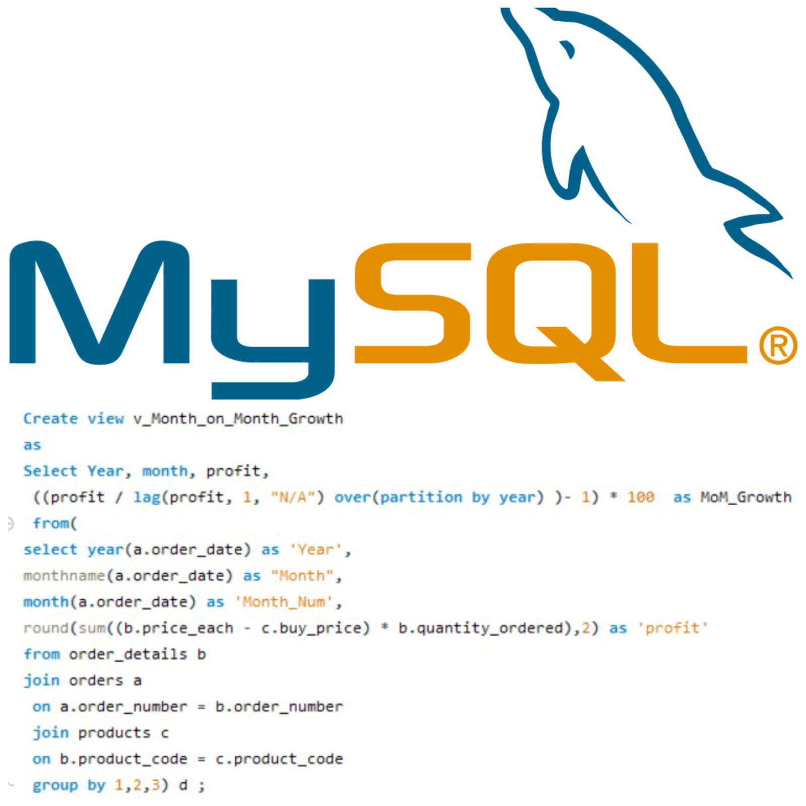
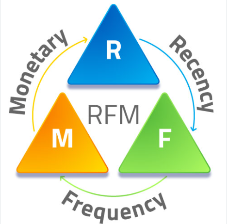

In this project, I do data expolartion using SQL on a dataset of a transport retailer consisting 7+ relatonal tables analysing
Profit, Profit share, Revenue, Revenue%, Customers, Vendors, Month on Month growth and many other key aspects . Creating Views, Procedures, CTEs and using Window Functions. Click below to know more about my Project.


Data cleaning, Data Modeling and Connecting Data using STAR and SNOWFLAKE Schema to create Dashboards to analyze Products and Customer of a sports company using Power Query, Dax, KPIs, Measures.

Python for Expolitatory Data Analysis using python. I have used Numpy and Pandas library to analyse IPL which is most popular cricket league. In this project,I have used Pandas for Data Exploration, Data Processing, Data Cleaning, Data Visualisation. Creating Points Table, analysing different averages, batsman strike rates, scoring in different stadiums and much more key aspects of IPL and cricket using Pandas. Click to know more.

Using Statistics to understand customer segmentation for further analysis. Using Percentiles, Mean, Median, Mode, Quartiles, Pivot Table and Vlookup, Xlookup to give RFM Scores to individual customers and grouping them in different segments to create further analysis and strategies to retain customers and capture new and old customers. Click below to Know more.
 Using Excel for Data Analysis using LOOKUP FUNCTIONS, DATA CLEANING, PIVOT TABLE, DASHBOARD. Click below to Know more.
Using SQL to analyse key aspects of the league. Creationg points table, analysing averages,batsman and bowlers. Using JOINS, VIEWS, STORED ROUTINES, SUBQURIES etc. Click below to Know more.
Using Excel for Data Analysis using LOOKUP FUNCTIONS, DATA CLEANING, PIVOT TABLE, DASHBOARD. Click below to Know more.
Using SQL to analyse key aspects of the league. Creationg points table, analysing averages,batsman and bowlers. Using JOINS, VIEWS, STORED ROUTINES, SUBQURIES etc. Click below to Know more.